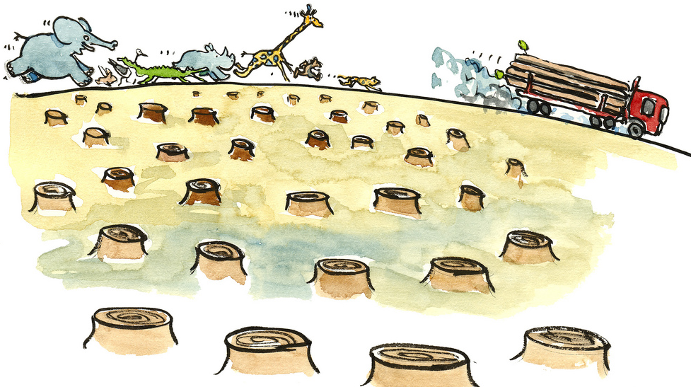

Read the information about some of these global problems, after that answer the following activities with the information.
Homelessness is the condition of people without a permanent house. Homeless people often cannot have or keep regular, safe, and good living spaces. The legal definition of homeless varies from country to country. The term homeless may also include people who sleep in a homeless shelter, a motel, a vehicle, or cardboard boxes.
Unemployment is the number of people in any country who want to work but do not have a job. Even if you have good qualifications, sometimes it’s hard to get a job. Most people are not looking for what they wanted anymore. They just want a job. They just want to earn some money so that they can have their own house or a car to support a family. The causes of unemployment are many, for example reducing number of employees in a company or replacing some positions with highly developed machines.
Food is one of the most important things in life, you need it to survive. Famine is the inability of people to obtain food. Usually caused by low food production resulting from drought, other factors, or it could be a result of the inability of a country or its population to buy food. Other causes of famine are natural disasters, poverty, overpopulation, political conspiracy and government policies. Some countries, particularly in Africa continue to have extreme cases of famine.
Overpopulation means that there are too many people and not enough resources to sustain the population. Think about it like this - let's say that you invite ten friends over for a pizza party, but you only have eight slices of pizza. Either two of your friends don't get a slice, or you will have to cut the pizza into smaller slices, giving everyone less. Just like your pizza party, the increasing population of the earth can lead to a shortage in water, food, and other natural resources that are needed to survive. Also, more people equals more pollution, so the population is polluting the earth at a rapid time.

Deforestation is the loss of trees, also known as deforestation, is negatively impacting the environment in many ways. Trees produce the oxygen that we need to survive; without them we will not be able to breath. Also, many animals who live in the forests are becoming endangered or even extinct. Humans are the main cause in deforestation, especially for farming or building.

There are lots of environmental problems nowadays, mainly because of pollution. Pollution is the contamination of air, water and soil by different materials that interfere with human health and quality of life. Pollution may be caused by natural sources or human activities, however, the result is the same. Pollutants can come from natural disasters or the result of human activity, such as oil spills, chemical spills, nuclear accidents. These can have terrible consequences on people and the planet where they live: destruction of the biodiversity, increased mortality of the human and animal species, destruction of natural habitat, damage caused to the quality of soil, water and air. There is also another type of pollution, noise pollution is defined as an unwanted or disturbing sound that interferes with normal activities.

Global warming refers to the increase of the earth’s average of temperature because of the increasing amounts of greenhouse gases in the atmosphere. Scientists agree that the burning of fossil fuels like oil and coal causes greenhouse gases. One way to reduce greenhouse gases is to reduce deforestation, for the reason that having lots of trees around is good for the atmosphere. There are already some changes happening because of global warming. Sea level is rising and some animals are moving to new homes because their natural habitat is disappearing.
If the warming gets worse, as scientists expect, there may be some kinds of plants and animals that become extinct. There may be more storms and floods. Sea level may rise so much that people have to move away from the coasts. Some areas may become too dry for farming.
All humans contribute to global warming by for example, driving a car, flying in an airplane and heating or cooling their houses. The best way to help slow down global warming is to put less Carbon into the air by using less fossil fuel.